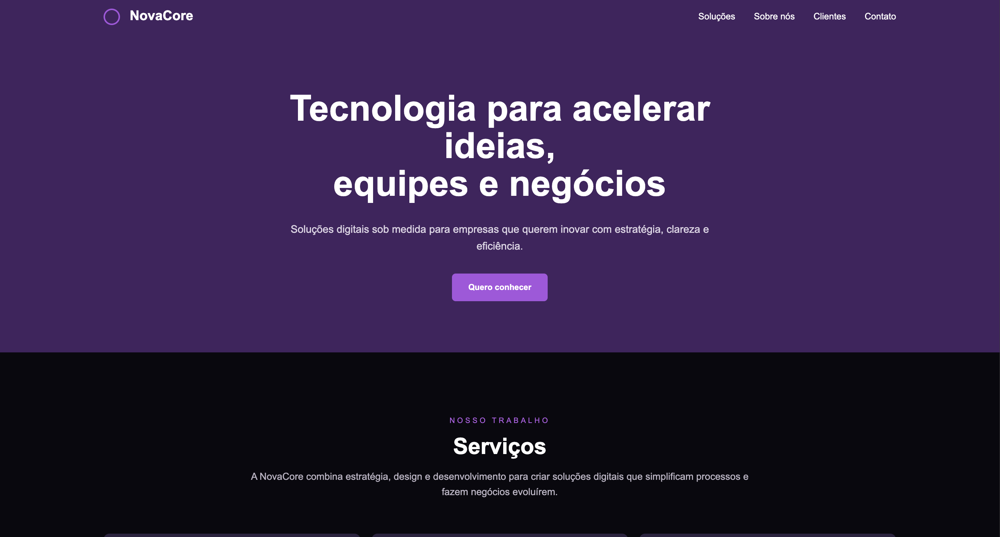
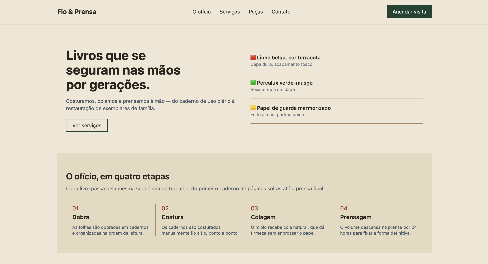
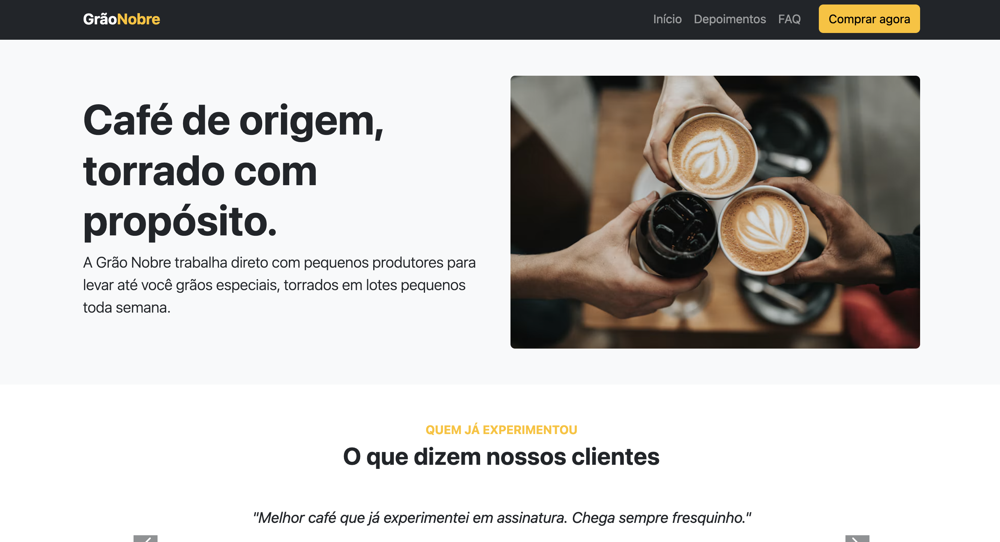
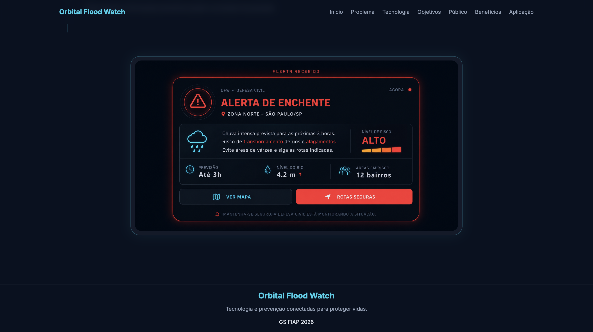
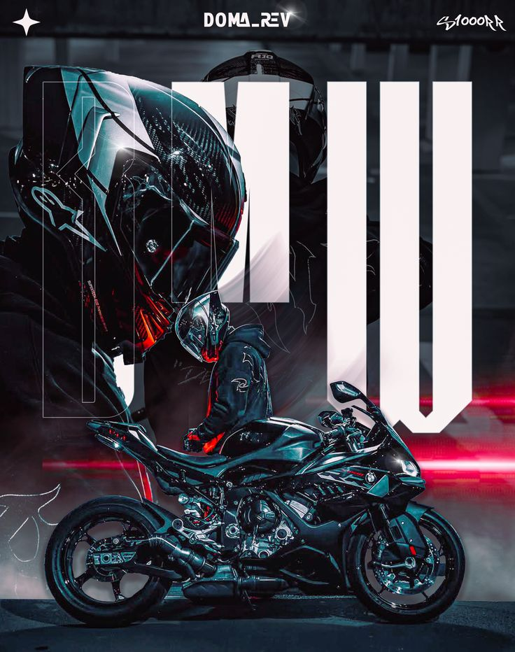
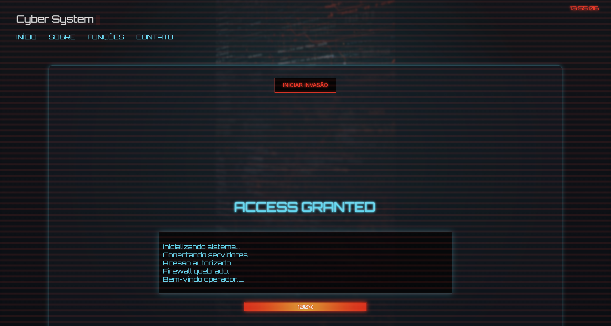
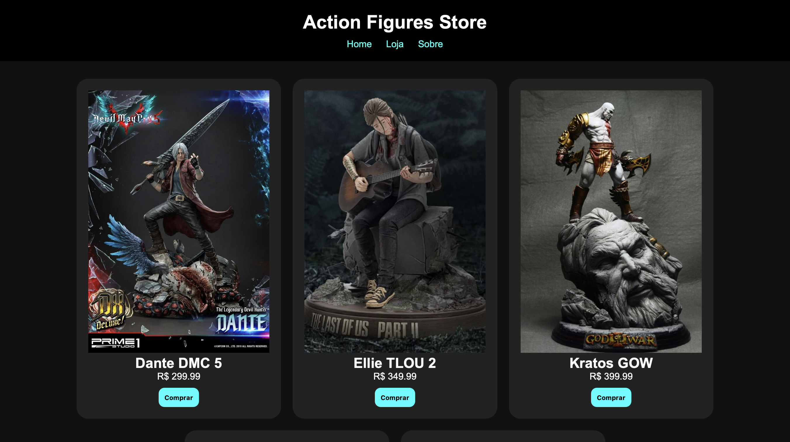

HTML5
Estruturação semântica de páginas e aplicações web.
SYSTEM BOOT
// ACCESS GRANTED
Estudante de Engenharia de Software
1º semestre na FIAP, construindo os fundamentos de HTML, CSS, JavaScript e Python. Em busca da minha primeira oportunidade de estágio para colocar a mão na massa e crescer junto de um time de tecnologia.
— SOBRE MIM
Um pouco sobre minha trajetória, o que estudo hoje e para onde estou indo.
Sou Alyson Souto, estudante do primeiro semestre de Engenharia de Software na FIAP. Ainda no início da graduação, já venho desenvolvendo projetos para transformar teoria em código real, explorando desde o desenvolvimento Front-end até minhas primeiras experiências com lógica de programação e hardware.
Tenho interesse especial por desenvolvimento Front-end, gosto de pensar em como uma interface se comporta, como ela guia quem está do outro lado da tela e como pequenos detalhes fazem toda a diferença na experiência final.
Meu objetivo é conquistar meu primeiro estágio em tecnologia, continuar evoluindo durante a graduação e construir uma carreira baseada em aprendizado contínuo, colaboração e desenvolvimento de soluções reais.
— TECNOLOGIAS
Minha caixa de ferramentas atual, em constante expansão.
Estruturação semântica de páginas e aplicações web.
Estilização, layout responsivo com Flexbox e Grid.
Interatividade e lógica aplicada ao Front-end.
Controle de versão e organização do código.
Versionamento, colaboração e publicação de projetos.
Lógica de programação e automação de tarefas.
Protótipos e planejamento visual de interfaces.
— FRONT-END
Atividades acadêmicas da FIAP imerso em HTML, CSS, Grid, responsividade e frameworks.

Adicione sua imagem PNGnovacore.png
01 // REVISÃO
Uma interface de soluções digitais para praticar estrutura HTML, organização visual e estilos responsivos.
Explorar projeto
Adicione sua imagem PNGfio-e-prensa.png
02 // FRAMEWORK TAILWIND
Site de um ateliê de encadernação, explorando utilitários Tailwind, Grid, espaçamento e adaptação de layout.
Explorar projeto
Adicione sua imagem PNGgrao-nobre.png
03 // FRAMEWORK BOOTSTRAP
Interface para uma marca de café, aplicando componentes Bootstrap, navegação, layout e organização responsiva.
Explorar projeto— PROJETOS
Uma seleção dos projetos acadêmicos e pessoais que desenvolvi até aqui.

Sistema de monitoramento e alerta para enchentes, desenvolvido para o desafio da Global Solution 2026 da FIAP.

Loja virtual de motocicletas elétricas, com carrinho de compras e layout responsivo, desenvolvida durante a disciplina de Front-End.

Projeto com temática livre, simula uma interface inspirada em sistemas cyberpunk. A proposta combina design futurista, animações HUD, efeitos neon e interações dinâmicas para transformar estudos de programação em uma experiência visual imersiva.

Projeto de um e-commerce de action figures, pensado para fãs de colecionáveis, personagens de games e cultura geek. A proposta foi desenvolver uma aplicação web interativa, como manipulação do DOM, utilização do método Reduce e estilização com CSS.
04 // CONTATO